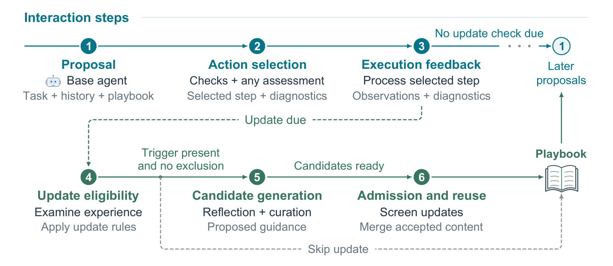

Rice University
Master of Electrical and Computer Engineering
ECE Future Star Scholarship

I work on reliable and efficient language agents, with a focus on how agents act, learn from experience, and use their computational budgets. I am also interested in AI and data science for healthcare.
I received my Master of Electrical and Computer Engineering from Rice University and my Bachelor of Engineering in Electronic Information Science and Technology from Fudan University.
Master of Electrical and Computer Engineering
ECE Future Star Scholarship
Bachelor of Engineering in Electronic Information Science and Technology
First-Class Scholarship
DuoGate links action control with selective context adaptation, using execution outcomes and correction feedback to guide learning. Separate gates determine when to learn and which lessons to retain for later decisions.

Developed a framework that pairs action verification with selective context adaptation for LLM agents, and designed a selective learning pipeline that determines when to learn from execution feedback and which guidance to retain.
On AppWorld with MiniMax M3, raised task completion from 79.8% to 86.3% and reduced recorded token usage by 65% relative to ACE.
Reproduced and extended WorkGenesis to generate executable workplace tasks from O*NET occupations.
On Terminal-Bench-Science, created a pipeline that traces each failure to the agent, task, verifier, or environment; it agreed with all 16 human-audit labels on a held-out set.
Hardened 20 saturated tasks, widening the teacher–student pass-rate gap from about zero to 32 points, then turned the method into a family-based generator that released 380 tasks.
Trained a hierarchical classifier for ten tumor categories from H&E slides via attention-based multiple-instance learning (MIL).
Added clinical context and immunohistochemistry (IHC) results as likelihood-ratio evidence, applied only when image predictions were uncertain.
In nested five-fold cross-validation on 255 patients, raised ten-class accuracy from 56.5% to 63.5%.
Tested whether neighborhood poverty is associated with COPD hospitalization relative to outpatient care across 44 Austin ZIP codes, using Texas public-use discharge data.
Fit negative-binomial models with an outpatient-encounter offset, adjusted for smoking prevalence from CDC PLACES, and checked for residual spatial autocorrelation.
Each 10-percentage-point increase in poverty was associated with 43% more admissions relative to outpatient care (IRR 1.43).
Built a tool that finds public posts relevant to AIBuildAI research and drafts replies suited to each platform for human review. Of 91 candidate posts on four platforms, it kept 40 drafts and skipped the rest after relevance and quality checks.
Proposed letting related coding tasks share one persistent exploration agent, so code context retrieved for one task is reused by the others.
Grouped tasks by TF-IDF similarity and built a CodeProjectEval harness that scores against official tests and counts tokens per request.
Teaching Assistant · Rice University
Teaching Assistant · Rice University
Conference Reviewer
ELEC 594 Capstone Project · Rice University